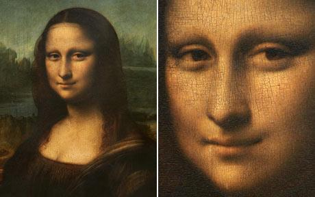

Museo Louvre Paris, Francia

El Museo del Louvre (Musée du Louvre, en francés) es el museo nacional de Francia consagrado al arte anterior al impresionismo, tanto bellas artes como arqueología y artes decorativas. Es uno de los más importantes del mundo. Está ubicado en París (Francia), en el antiguo palacio real del Louvre, y actualmente promueve dos subsedes, en Lens (Francia) y en Abu Dabi (Emiratos Árabes Unidos).
De no haber sido por una batalla, no existiría el Louvre. https://t.co/0yHBxrEQK8
— Revista Viajar (@viajar) May 4, 2020
Edificio
El edificio que alberga el museo desde su fundación es el viejo castillo del Louvre, luego reconvertido en palacio real. Su origen se remonta al siglo XII, más exactamente entre 1190 y 1202, y fue embellecido con ampliaciones renacentistas y otras más tardías. En este edificio acumuló el rey Carlos V (1338-1380) sus colecciones artísticas. Ya en el siglo XVI, los monarcas Francisco I y Enrique II planearon reformas para hacer de él una verdadera residencia real renacentista.
Fue la reina Catalina de Médicis la que esbozó el proyecto que hizo del Louvre el gran palacio que es actualmente, labores que continuó Enrique IV después de las guerras de religión. En sus mejoras arquitectónicas y decorativas han intervenido múltiples artistas a lo largo de varios siglos, desde Claude Perrault y los pintores Simon Vouet y Charles Le Brun en el XVII hasta Delacroix y Georges Braque, quienes pintaron algunos de sus techos.
Colecciones
El Museo del Louvre refleja el papel protagonista de Francia como potencia económica y cultural de Europa, y recoge los mejores frutos de la actividad coleccionista y de mecenazgo promovida por sus clases dirigentes a lo largo de varios siglos. Gracias al poder de la Dinastía Borbón y de Napoleón Bonaparte, a campañas arqueológicas y a posteriores adquisiciones, cuenta actualmente con diferentes colecciones de obras de arte provenientes de civilizaciones, culturas y épocas variadas. Contiene alrededor de 445 000 piezas, de las que 35 000 están expuestas.
Pintura Occidental
El Louvre alberga varias de las obras maestras del arte universal, que han alcanzado la categoría de icono y que son reconocidas instantáneamente en cualquier lugar del planeta. Aquí se encuentra la Gioconda, acaso la pintura más célebre, debida a Leonardo Da Vinci, así como la Virgen del Canciller Rolin de Jan van Eyck, La encajera de Vermeer, la serie de grandes pinturas de La Vida de María de Médicis de Rubens, La coronación de Napoleón de Jacques-Louis David y La Libertad guiando al pueblo de Delacroix.
